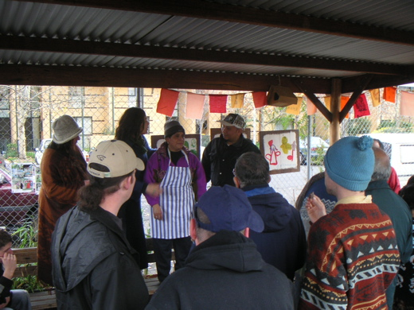

<--Previous
Up
Next-->

Then a few words from Vilma about her experiences in the garden. Her special white corn is apparently grown in several states of australia - just the right type for milling into pupusa flour!